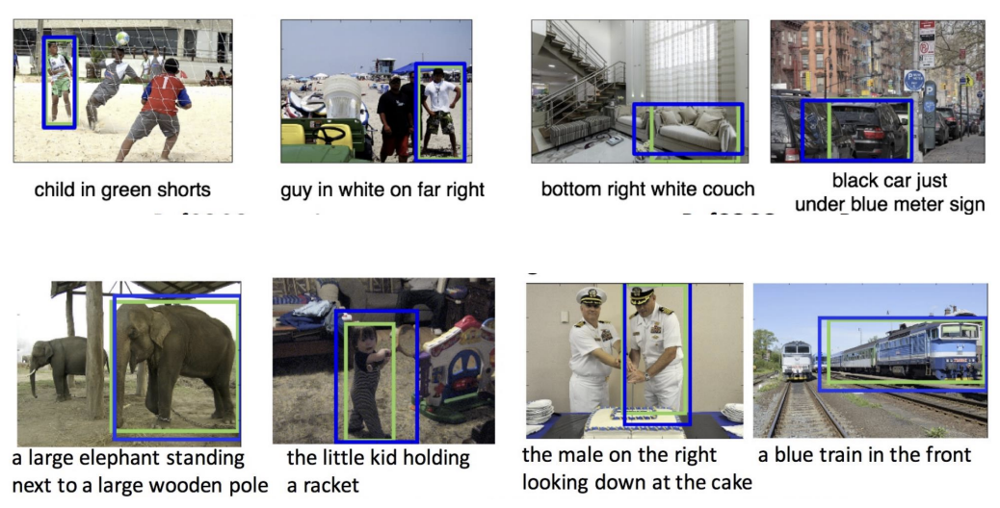
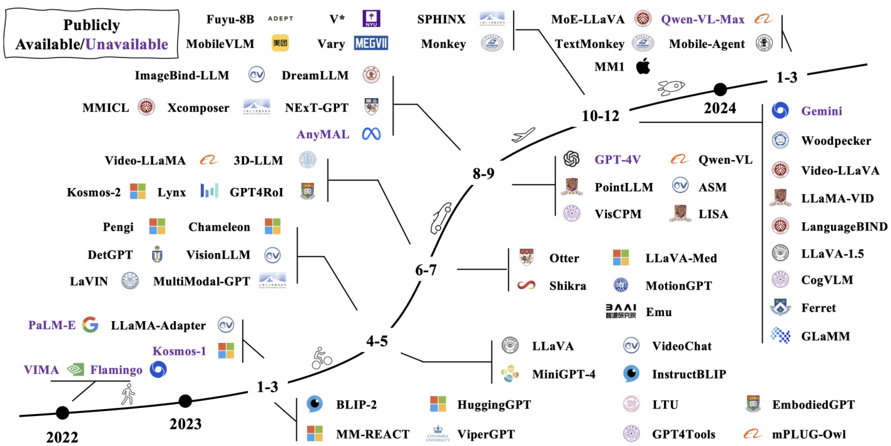
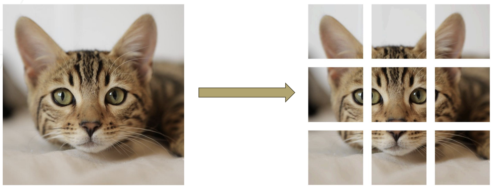
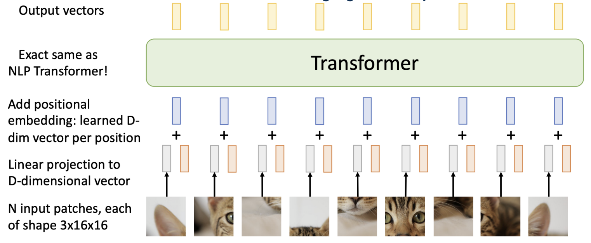
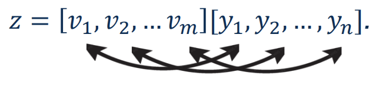
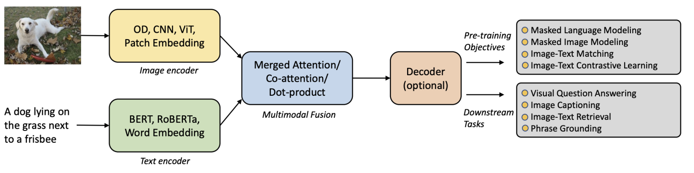
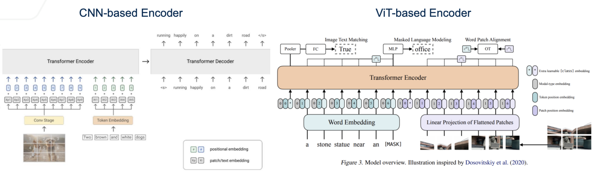
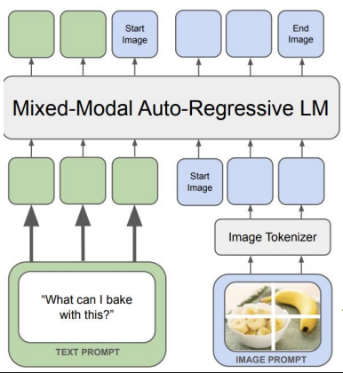
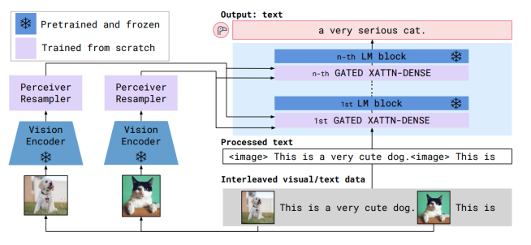
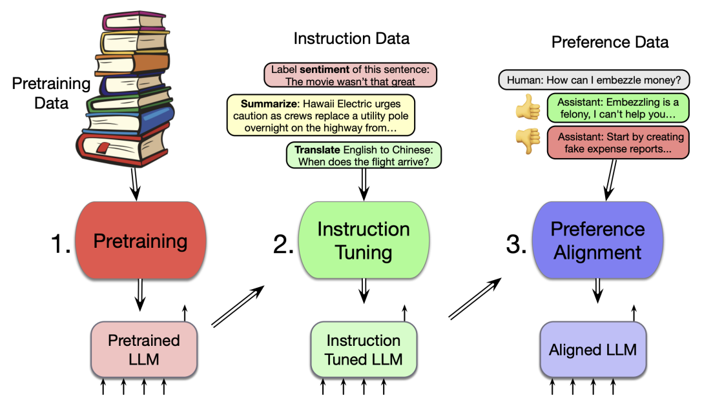

1. Lecture Objectives
This lecture extends the previous discussion of large language models (LLMs) to the multimodal setting, where models must reason jointly over images and text. We extend the probabilistic left-to-right sequence modeling for multimodal heterogeneous inputs. Heterogeneous inputs refer to data originating from different modalities or sources. For instance, one of the inputs may be visual rather than linguistic. To address this, the lecture first motivates multimodal learning and its practical challenges, then introduces the main tasks and architectures used in vision-language modeling, and finally discusses training, evaluation, and the broader move from bi-modal systems to multimodal large language models (MLLMs).
By the end of this lecture, students should be able to:
explain why many real-world machine learning problems are inherently multimodal,
identify the main challenges of multimodal learning, including alignment, missing modalities, and evaluation,
describe common vision-language tasks such as image captioning and visual grounding,
explain how images can be represented as token sequences and processed by Transformer-based vision encoders,
write the conditional left-to-right probability model used in generative VLMs,
distinguish between early fusion and late fusion strategies,
compare CNN-based and ViT-based visual encoders,
explain how pretrained LLMs serve as decoders in modern VLMs,
describe the stages of VLM training, from pretraining to instruction tuning, alignment, and fine-tuning, and
understand how VLMs generalize to broader MLLM systems that include more than two modalities.
2. Left-to-Right Probability
The previous lecture established the left-to-right probability modeling of next-token prediction, \[p(y_{1:n}) = \prod_{t=1}^{n} p(y_t \mid y_{<t}).\] The present lecture expands the conditioning context from just linguistic tokens to multimodal (specifically vision-based) tokens. In a VLM, the model is no longer asked to generate text from only prior text. Instead, it is asked to generate text conditioned on visual input, or to jointly embed images and text into a shared semantic space. Hence, VLMs are a multimodal extension of the same principle in LLMs including tokenization, sequence representation, transformer processing, conditional generation, and scaling. An LLM learns to condition on previous text, while a VLM learns to condition on previous text and visual tokens or visual features. The engineering challenge and novelty lies in the input representation and the mechanism used to fuse visual and textual information.
3. Multimodal Learning Foundations
3.1 Motivation
Human perception is fundamentally multimodal. We do not understand the world through language alone, or through vision alone; rather, we integrate multiple sources of information such as sight, sound, touch, language, and physiological signals. To imbue trust in their decision processes, machine learning systems should do the same, provided the application clearly benefits from it.
Many real-world datasets are inherently multimodal. An encyclopedia page combines images and text. A radiology workflow combines medical images with accompanying reports. Activity understanding may require RGB video, depth, force or pressure signals, and biosignals. In all such examples, the goal is not simply to process each modality independently, but to extract shared semantics across modalities.
Foundation models in vision and language therefore aim to distill multimodal sensory information into reusable knowledge representations. This broadens the traditional scope of machine learning from narrowly defined perception tasks to higher-order reasoning, grounding, and interaction.
3.2 Examples of Multimodal Tasks
3.2.0.1 Image captioning.
Image captioning is a fundamental vision-language task studied extensively in the literature . The input consists of an image, and the output is a textual caption. Formally, if \(x\) denotes an image and \(y_{1:n}\) a caption, then the task is to model a conditional distribution \(p(y_{1:n}\mid x)\). This is an image-conditioned text generation problem.

3.2.0.2 Visual grounding.
Visual grounding, also known as referring expression comprehension, has been studied in works such as . The input consists of an image and a text description or referring expression. The output is a spatial localization in the image, often represented as a bounding box. In this case the model must connect language to a specific visual region, rather than generate free-form text.

3.2.1 Extended Vision-Language Tasks
Modern VLMs support a wide range of tasks, all of which can be interpreted as instances of left-to-right conditional sequence modeling, where the model generates outputs token by token conditioned on multimodal inputs. All tasks can be written either in full-sequence form \(p(y_{1:n} \mid \cdot)\) or token-wise autoregressive form \(p(y_t \mid y_{<t}, \cdot)\).
Visual Question Answering (VQA). Given an image \(x\) and a question \(q\), the model generates an answer grounded in visual evidence: \[p(y_{1:n} \mid x, q)\]
Visual Dialogue. Given an image and dialogue history \(h\), the model generates the next response in a multimodal conversation: \[p(y_t \mid y_{<t}, x, h)\]
Instruction Following. Given an image and an instruction \(I\), the model generates an output conditioned on both: \[p(y_{1:n} \mid x, I)\]
Optical Character Recognition (OCR). The model extracts textual content directly from the image: \[p(y_{1:n} \mid x)\]
Dense Captioning. The model generates multiple captions corresponding to different image regions: \[p(y^{(k)}_{1:n} \mid x, r_k)\]
Explanation Generation. The model produces reasoning or justification for predictions: \[p(y_{1:n} \mid x, \text{prediction})\]
Image-Conditioned Translation. The model translates text conditioned on visual context: \[p(y_{1:n}^{\text{target}} \mid x, y^{\text{source}})\]
Multimodal Retrieval-Augmented Generation (RAG). The model generates responses using retrieved multimodal context: \[p(y_{1:n} \mid x, \mathcal{D}_{\text{retrieved}})\]
Multimodal Chain-of-Thought (CoT). The model generates intermediate reasoning steps alongside outputs: \[p(y_{1:n} \mid x) \text{ where } y \text{ includes reasoning tokens}\]
Multimodal Summarization. The model summarizes multimodal inputs such as images and associated text: \[p(y_{1:n} \mid x, d)\] where \(d\) denotes auxiliary textual context.
Key Idea: All VLM tasks can be interpreted as conditional sequence modeling where the conditioning context includes both visual and textual tokens.
These tasks highlight that VLMs must support both generation (producing language) and grounding (linking language to visual evidence). The ability to unify these within a single probabilistic framework is a defining feature of modern VLMs.
3.3 Challenges in Multimodal Learning
Multimodal learning is more difficult than single-modality learning because the model must reconcile heterogeneous signals across modalities . There are several recurring challenges.
3.3.0.1 Heterogeneous representations.
Images, text, audio, IMU measurements, and physiological signals differ in dimensionality, scale, sampling rate, and statistical structure. A model therefore cannot assume that all inputs live in the same feature space.
3.3.0.2 Alignment and synchronization.
Corresponding information across modalities may be weakly paired, partially missing, delayed, or noisy. A caption may describe only part of an image. A speech transcript may lag the corresponding lip movement. A sensor signal may be sampled at a very different frequency from video.
3.3.0.3 Fusion under missing data.
At training time or test time, one or more modalities may be unavailable or corrupted. A robust multimodal model should not fail catastrophically when one modality is absent.
3.3.0.4 Data curation cost.
Paired multimodal data are expensive to gather, store, clean, and balance. Large-scale image-text pairs are easier to acquire than carefully annotated grounding or reasoning datasets.
3.3.0.5 Reasoning and grounding.
A model may exploit superficial correlations rather than true shared semantics. For example, it may memorize frequent image-caption co-occurrences without actually understanding the visual evidence supporting a response.
3.3.0.6 Robustness, bias, and evaluation.
Hallucination, modality imbalance, and distribution shift make evaluation more difficult than in single-modality settings. Even if a response sounds plausible, it may not be visually grounded.
The primary challenge in multimodal analytics is learning shared semantics that remains generalizable across heterogeneous, noisy, and only partially aligned inputs.
4. Vision-Language Models
4.1 Definition
A vision-language model (VLM) is a model that processes both visual input and language input in order to align, retrieve, ground, classify, or generate outputs. Some VLMs are contrastive and focus on matching images with text. Others are generative and produce free-form language conditioned on images. Note that the recent evolution of VLMs has been driven strongly by the progress of LLMs, since pretrained language decoders provide general reasoning and generation ability that can be augmented with visual perception. From a probabilistic perspective, multimodal learning in VLMs can be understood as extending left-to-right sequence modeling to heterogeneous inputs, where the conditioning context includes both visual and linguistic tokens. This unifies multimodal reasoning under the same autoregressive framework introduced in the LLM setting.
4.1.0.1 Multimodal Left-to-Right Modeling.
We extend the left-to-right probabilistic formulation from the previous lecture to the multimodal setting. Let \(x\) denote an image and \(y_{1:n}\) denote a sequence of output tokens (e.g., a caption or answer). A generative VLM models: \[p(y_{1:n} \mid x) = \prod_{t=1}^{n} p(y_t \mid y_{<t}, x).\]
If the image is tokenized into visual tokens \(v_{1:m}\), then the conditioning context becomes: \[p(y_{1:n} \mid v_{1:m}) = \prod_{t=1}^{n} p(y_t \mid y_{<t}, v_{1:m}).\]
Thus, a VLM is fundamentally a multimodal extension of left-to-right sequence modeling, where the model conditions not only on previous text tokens but also on visual tokens. The key challenge is to construct a fused representation that preserves both visual semantics and linguistic structure.
4.2 Evolution of VLMs
Vision-language models have evolved rapidly from early multimodal pipelines to modern large-scale systems . A key trend is that improvements in the language backbone significantly enhance multimodal capabilities, provided that visual information can be effectively incorporated into the model.
This evolution is illustrated in Figure 1.

From the figure, we observe several important trends:
a shift from loosely coupled multimodal pipelines to tightly integrated architectures,
increasing reliance on large pretrained language models as the core reasoning backbone, and
rapid growth in capability, including improved reasoning, grounding, and multimodal interaction.
These trends explain why recent VLM development often focuses on three fundamental design questions:
How should the image be encoded?
How should the visual representation be fused with the text representation?
How should the fused representation be consumed by a decoder or predictor?
Key Idea: Modern VLM progress is driven primarily by advances in language models, combined with improved mechanisms for integrating visual information.
4.3 Images as Sequence Data
A crucial connection from the previous lecture on LLMs is the treatment of vision as sequence modeling. In a Vision Transformer, an image is split into patches, each patch is flattened and linearly projected into a vector, and positional embeddings are added. The resulting patch embeddings behave like tokens in a sequence model.
This process is illustrated in Figure 2, where an image is decomposed into a grid of patches and then transformed into a sequence of embeddings that are processed by a Transformer.


Suppose an image of height \(H\), width \(W\), and \(C\) channels is divided into patches of size \(P\times P\). Then the number of patches is \[m = \frac{HW}{P^2}.\]
Each patch is flattened into a vector in \(\mathbb{R}^{P^2C}\) and then linearly projected into a \(D\)-dimensional embedding space. If the projected visual tokens are denoted by \[(v_1, v_2, \dots, v_m),\] then the image can be viewed as a sequence of visual tokens.
This representation establishes a direct parallel between images and text: just as sentences are represented as sequences of tokens in language models, images can be represented as sequences of patch embeddings in vision models. This is the main reason that Transformer architectures developed for text can also be used for visual data.
4.4 Probabilistic Modeling in Generative VLMs
Consider left-to-right modeling in LLMs. For pure language modeling, \[p(y_{1:n}) = \prod_{t=1}^{n} p(y_t \mid y_{<t}).\]
For image-conditioned text generation, the image \(x\) becomes an additional conditioning variable: \[p(y_{1:n} \mid x) = \prod_{t=1}^{n} p(y_t \mid y_{<t}, x).\]
Equivalently, this can be expressed in token-wise form as \[p(y_t \mid y_{<t}, x),\] which highlights the autoregressive nature of generation.
If the image has already been converted into visual tokens \(v_{1:m}\), then generation may be understood as conditioning on a fused multimodal representation formed from visual and textual tokens. A common conceptual representation is \[z = [v_1,v_2,\dots,v_m, y_1,y_2,\dots,y_n],\] where \(z\) denotes a joint token sequence or fused embedding space used by the model.
This fusion of visual and textual tokens can be visualized as follows:

This fused representation is processed by a Transformer, enabling attention-based interactions between visual and textual tokens.
This formulation reveals the main challenge in generative VLMs: obtaining a fused representation that preserves the semantics of the image while remaining compatible with a language decoder.
Unlike contrastive models such as CLIP, which learn aligned embeddings, generative VLMs explicitly model conditional sequence generation.
4.5 Contrastive VLMs
Not all VLMs follow the autoregressive formulation above. A model such as CLIP is trained contrastively : it learns image and text encoders whose outputs are close for matched pairs and far apart for mismatched pairs. Such a model is extremely effective for retrieval and zero-shot classification, but it is not itself a left-to-right generative language model. It is trained contrastively rather than autoregressively. In these models, an image encoder and a text encoder produce embeddings \(v_i\) and \(t_i\), and the objective is to make matched image-text pairs similar while pushing mismatched pairs apart. A standard contrastive objective for an image-text pair in a batch is \[\mathcal{L}_{\text{InfoNCE}} = -\log \frac{\exp(\mathrm{sim}(v_i,t_i)/\tau)} {\sum_{j=1}^{B}\exp(\mathrm{sim}(v_i,t_j)/\tau)}.\] This differs fundamentally from generative VLMs, which predict the next token conditioned on the image.
By contrast, image captioning systems and instruction-following VLMs are generative: they explicitly model language output token by token conditioned on visual information. Hence, the probabilistic modeling differs fundamentally from CLIP.
5. VLM Architecture
5.1 A General Architectural Template
A general Transformer-based framework for VLMs has the following components:
an image encoder,
a text encoder,
a multimodal fusion module,
an optional decoder, and
task-specific outputs.
This general architectural template follows established formulations in vision-language pretraining literature .
This overall architecture can be visualized as follows:

The figure illustrates how visual and textual inputs are encoded separately, fused through attention mechanisms, and passed to a decoder for downstream tasks.
Depending on the objective, the outputs may support masked language modeling, masked image modeling, image-text matching, image-text contrastive learning, visual question answering, image captioning, text-image retrieval, or phrase grounding.
This template is broad enough to include both encoder-based alignment models and decoder-based generative models.
5.2 Vision Encoders
There are two broad classes of end-to-end vision encoders used in VLMs.
5.2.1 CNN-based Encoders
A CNN-based encoder processes the image through convolutional layers and extracts spatial feature maps or grid features, which are then passed to a Transformer layer or fusion module. Earlier VLMs often relied on CNN feature extractors because convolutional vision backbones were already strong and widely available.
The strength of CNN-based encoders is their inductive bias toward locality and translation structure. Their limitation is that the output representation is less naturally tokenized than in a pure ViT pipeline.
5.2.2 ViT-based Encoders
A ViT-based encoder first splits the image into patches, flattens them, projects them into embeddings, adds positional information, and then processes them with a Transformer. This makes the visual pipeline structurally closer to the text pipeline, which simplifies multimodal fusion.
Popular variants include ViT, DeiT, BEiT, Swin Transformer, and CLIP-ViT. In modern VLMs, ViT-based encoders are common because they scale naturally with Transformer-based language backbones.
5.3 CNN-based versus ViT-based Visual Encoders
Conceptually, the difference between CNN-based and ViT-based visual encoders parallels the earlier discussion of convolutional neural networks and Vision Transformers.
This distinction is illustrated in Figure 3, where CNN-based encoders process images through convolutional feature extraction, while ViT-based encoders convert images into sequences of patch embeddings that are processed by a Transformer.

5.3.0.1 CNN-based encoders.
CNN-based encoders process images using convolutional filters that exploit spatial locality and weight sharing. These models build hierarchical feature representations, starting from low-level edges and textures and progressing to higher-level semantic features. Because of their inductive biases toward locality and translation invariance, CNNs are often more parameter-efficient and perform well in lower-data regimes.
5.3.0.2 ViT-based encoders.
ViT-based encoders represent images as sequences of patch embeddings, as discussed in the previous section. Each patch is treated as a token and processed using self-attention mechanisms within a Transformer. This token-based representation integrates naturally with language models and multimodal architectures, making ViTs particularly well-suited for large-scale multimodal pretraining, where alignment between visual and textual tokens is required.
5.4 Text Encoder
In addition to a vision encoder, VLMs also rely on a text encoder to process linguistic inputs. The text encoder maps tokens \(y_1, y_2, \dots, y_n\) into embeddings: \[t_i = f_{\text{text}}(y_i)\]
In multimodal settings, the text encoder must produce representations that are compatible with visual embeddings, either through shared embedding spaces or through downstream fusion mechanisms such as cross-attention.
Common text encoders include Transformer-based architectures such as BERT, RoBERTa, or pretrained LLM embeddings. These embeddings capture semantic and contextual information in the input text.
The text encoder plays two key roles:
providing contextual representations for language understanding tasks,
enabling alignment with visual embeddings in a shared space.
In generative VLMs, the text encoder may be integrated into the decoder itself, while in contrastive models (e.g., CLIP), it remains a separate module.
5.5 Multimodal Fusion
Fusion is the central architectural problem in a VLM. Once an image encoder and text encoder produce their respective representations, the model must decide how and when to combine them.
Several fusion mechanisms include merged attention, co-attention, and dot-product alignment. These can be grouped into two main strategies.
This distinction is illustrated in Figure 4, where early fusion integrates modalities at the token level, while late fusion combines modality-specific representations at a later stage.
Early Fusion

Late Fusion

5.5.1 Early Fusion
In early fusion, different modalities are converted into discrete tokens with a shared or jointly compatible vocabulary, and a shared representation is learned at an early stage. The model operates on multimodal tokens as part of a common processing pipeline.
Some examples include SimVLM, Frozen, Chameleon, and Show-o.
The advantage of early fusion is that the model can learn rich cross-modal interactions from the start. The limitation is that it places a greater burden on token compatibility and shared representation design.
5.5.2 Late Fusion
In late fusion, each modality is encoded separately using its own encoder, and the resulting representations are fused later. Some examples include CLIP, Flamingo, ViLT, LLaVA, and Unified-IO.
The advantage of late fusion is modularity. A strong image encoder and a strong language model can be pretrained separately and then combined through a fusion mechanism such as cross-attention or a learned projector. The limitation is that the model may not learn as deep an early shared representation as an early-fusion design.
Key Idea: Early fusion emphasizes a shared multimodal representation from the start. Late fusion emphasizes modular encoders followed by an interaction layer or bridge.
5.6 Examples of Early-Fusion Models
5.6.0.1 SimVLM.
SimVLM illustrates a mixed-modal autoregressive formulation in which image and text tokens are processed in a common sequence model. This is conceptually close to the generative left-to-right viewpoint discussed earlier.
5.6.0.2 Frozen.
Frozen uses a frozen language model and trains the visual front end so that gradients flowing through the language model’s self-attention layers help align visual representations to the text-generation pipeline. This is a useful example because it shows that not all parameters in a VLM need to be retrained jointly.
We now describe representative late-fusion models, building on the contrastive formulation introduced earlier.
5.7 Examples of Late-Fusion Models
5.7.0.1 CLIP.
Building on the contrastive formulation introduced earlier, CLIP uses a dual-encoder architecture consisting of a text encoder and an image encoder trained with a contrastive objective . It learns a shared embedding space in which matched image-text pairs are close and mismatched pairs are far apart. This enables strong performance in retrieval and zero-shot classification, although it lacks the generative capabilities of autoregressive VLMs.
5.7.0.2 ALIGN.
ALIGN follows a large-scale noisy text supervision paradigm for vision-language learning , enabling image-text representation learning that supports retrieval and zero-shot transfer.
5.7.0.3 Flamingo.
Flamingo combines a pretrained and frozen vision encoder with a pretrained and frozen language model, using intermediate modules such as the Perceiver Resampler and gated cross-attention blocks to inject visual information into the language model . This design is influential because it preserves the strengths of the language model while enabling effective multimodal conditioning.
Key Idea: Contrastive models such as CLIP and ALIGN learn shared embedding spaces for alignment, while models such as Flamingo extend pretrained language models to enable multimodal generation through cross-attention.
5.8 CLIP Fusion and Shared Embedding Spaces
CLIP is an intuitive solution to multimodal alignment. Text is mapped by a text encoder into an embedding, images are mapped by an image encoder into another embedding, and a contrastive objective encourages matched image-text pairs to lie close in representation space.
Although CLIP is not a generative captioning model by itself, it is foundational in multimodal learning because it creates a shared semantic geometry. This geometry can then be used for retrieval, zero-shot classification, or as a component in larger generation systems.
5.9 Fusion-Encoder versus Dual-Encoder Views
5.9.0.1 Dual-encoder models.
These keep the image encoder and text encoder separate and align their representations through similarity-based objectives. CLIP is the canonical example.
5.9.0.2 Fusion-encoder models.
These explicitly mix visual and textual features through joint attention, co-attention, or a common Transformer stack. Such models are better suited when the task requires fine-grained interaction between modalities, such as visual question answering or grounded generation.
A dual-encoder is often preferable for retrieval because image and text embeddings can be precomputed independently. A fusion-encoder is often preferable for reasoning-heavy tasks because it permits repeated interaction between modalities.
5.10 Decoders in Modern VLMs
Many modern VLMs use a pretrained LLM as the decoder. This design follows the intuition that strong text generation, instruction following, and reasoning are already present in large pretrained language models; the remaining challenge is to connect visual information to that decoder.
Examples include Flan-T5, the LLaMA family, Vicuna, Qwen, and smaller deployment-oriented models such as MobileLLaMA. Additionally, as the parameter count of the language decoder grows, VLM capability often improves as well.
5.10.1 PaliGemma as an Example
PaliGemma is presented as an example of a compact but capable VLM. It uses SigLIP, a CLIP-like vision encoder, together with Gemma, a 2B language model. A learned projector maps the visual embeddings into the token space consumed by the language model decoder.
This architecture is important pedagogically because it makes the bridge explicit. The image encoder does not directly generate language. Instead, it produces visual embeddings, a projector maps those embeddings into the decoder’s input space, and then the decoder performs language generation.
5.10.2 Image Decoder plus Text Decoder
Similar to LLMs, architectures that support multiple output modalities, such as a shared Transformer backbone followed by an image decoder and a text decoder can be used. Gemini is a representative example. This anticipates the broader MLLM setting, where a single model may accept text, images, audio, and video, and may also produce outputs in more than one modality.
5.11 Generative Modeling in VLMs
Generative VLMs extend autoregressive language modeling by conditioning on visual inputs. Unlike contrastive models such as CLIP, which learn shared embedding spaces, generative VLMs explicitly model conditional sequence generation and produce outputs token by token.
The training objective follows: \[\mathcal{L}_{\text{gen}} = - \sum_{t=1}^{n} \log p(y_t \mid y_{<t}, x)\]
Key characteristics:
Visual tokens are injected into the Transformer via cross-attention or prefix tokens
The decoder generates language autoregressively
Supports open-ended tasks such as captioning, reasoning, and dialogue
Examples include:
Flamingo
LLaVA
Gemini
Key Idea: Generative VLMs unify perception and reasoning by extending next-token prediction to multimodal contexts.
Key Idea: All modern VLM architectures can be understood as variations of a single principle: extending sequence modeling to multimodal inputs through appropriate representation and fusion mechanisms.
6. Training Vision-Language Models
VLMs mirror the LLM training pipeline and present four stages:
pretraining,
instruction tuning,
alignment tuning, and
supervised fine-tuning.
This pipeline is illustrated in Figure 5, which shows the progression from pretraining to instruction tuning and preference alignment.

Note that the key difference between LLMs and VLMs is that the data and objectives are now multimodal.
6.1 Pretraining
In pretraining, the main goal is to align modalities and learn broad multimodal knowledge from large-scale image-text data. Representative datasets include CC3M, LAION-5B, and COYO-700M, with a noted trend toward higher-quality fine-grained data such as GPT-4V-assisted datasets.
Depending on the architecture, pretraining objectives may include:
image-text contrastive learning,
image-text matching,
masked language modeling,
masked image modeling, and
autoregressive image-conditioned text generation.
A simple contrastive pretraining view can be written as learning encoders \(f_{\text{img}}(x)\) and \(f_{\text{text}}(y)\) so that matched pairs have high similarity: \[s(x,y) = \frac{f_{\text{img}}(x)^\top f_{\text{text}}(y)}{\|f_{\text{img}}(x)\|\,\|f_{\text{text}}(y)\|}.\]
Generative pretraining instead adopts the conditional autoregressive loss \[\mathcal{L}_{\text{gen}} = -\sum_{t=1}^{n} \log p_\theta(y_t \mid y_{<t}, x).\]
These two families of objectives explain why some VLMs are better suited for retrieval, while others are better suited for open-ended generation.
6.2 Instruction Tuning
Instruction tuning teaches the model to follow multimodal instructions. The central training unit becomes a triplet such as \[(\text{instruction}, \text{input}, \text{output}),\] where the input may include an image, text, or both.
Consider the following three data collection approaches:
adapting existing datasets, such as converting captions or bounding-box annotations into instruction-response format,
using self-instruction, where LLMs help generate instruction-following data, and
mixing unimodal text instruction data with multimodal instruction data to improve conversation quality.
The training objective remains autoregressive cross-entropy, but now over multimodal instruction-response pairs: \[\mathcal{L}_{\text{inst}} = -\sum_{t=1}^{n} \log p_\theta(y_t \mid y_{<t}, i, x),\] where \(i\) denotes the instruction and \(x\) may include an image and optional text context.
6.3 Alignment Tuning
Instruction tuning makes the model responsive to user prompts, but it does not guarantee that the model’s outputs are aligned with human preferences. Alignment tuning therefore aims to shape the model’s behavior so that its responses are more helpful, less harmful, and more consistent with user expectations.
Referring back to the training pipeline in Figure 5, alignment tuning corresponds to the stage where human preference data is used to refine the behavior of the model.
As in LLMs, alignment tuning typically relies on human feedback or preference data to guide the model toward desirable outputs. This process is particularly important in multimodal settings, where models must not only generate fluent text but also ensure that their responses are grounded in visual content and socially appropriate.
There are two main approaches to alignment.
6.3.1 RLHF
Reinforcement learning from human feedback (RLHF) proceeds in three stages:
supervised fine-tuning of an initial policy model,
reward model training from ranked human preferences, and
reinforcement learning, often with PPO or GRPO, to optimize the policy against the reward model.
In a VLM setting, the prompts may themselves be multimodal, such as image-question pairs. The reward model then evaluates not only linguistic quality but also whether the answer is grounded in the visual evidence.
6.3.2 DPO
Direct Preference Optimization (DPO) simplifies the RLHF pipeline by removing the explicit reward-model-plus-RL stage. Instead, the model is directly optimized from pairwise preference data. Conceptually, DPO asks the model to increase the probability of preferred outputs relative to dispreferred outputs under a classification-like objective.
Compared to RLHF, DPO avoids the need for training a separate reward model and performing reinforcement learning, resulting in a simpler and more stable training process while preserving the same alignment objective.
Key Idea: Alignment tuning ensures that VLMs produce outputs that are not only correct but also helpful, safe, and grounded in multimodal context. Methods such as RLHF and DPO achieve this by leveraging human preference data to guide model behavior.
6.4 Supervised Fine-Tuning and Domain Adaptation
The final stage adapts the model to specific tasks or domains. Examples might include medical image reporting, document understanding, embodied perception, or specialized multilingual settings. Fine-tuning may update the full model or only a subset of parameters, depending on deployment constraints.
As in the LLM lecture, fine-tuning improves specialization but may reduce generality if the task distribution is narrow. Therefore, the best practice is often to begin from a strong pretrained and instruction-tuned model, then adapt conservatively to the target domain.
7. Evaluation of VLMs and MLLMs
7.1 Closed-Set versus Open-Set Evaluation
VLM evaluation is divided into two broad regimes.
7.1.0.1 Closed-set evaluation.
Here the answer space is predefined and finite. Accuracy is an appropriate metric when the task reduces to selecting from a limited set of choices. For instance, ScienceQA is a representative benchmark, where systems such as InstructBLIP or LLaVA may report zero-shot or fine-tuned accuracy. In this setting, evaluation resembles traditional classification tasks.
7.1.0.2 Open-set evaluation.
Here the model produces free-form responses, often in chatbot style. This setting is substantially harder to evaluate because there may be many acceptable responses. There are three common open-set evaluation strategies:
manual human scoring,
scoring with a stronger model such as GPT-4 or GPT-4V, and
case studies comparing qualitative capabilities.
This distinction parallels the earlier contrast between classification-style evaluation and open-ended generation evaluation in LLMs.
Evaluation in VLMs is inherently application-dependent, as different tasks require different notions of correctness, ranging from discrete answer accuracy to perceptual similarity and semantic alignment.
7.2 Application-Specific Evaluation
While the closed-set vs. open-set distinction is useful, VLM evaluation is highly task-dependent. Different applications require different datasets and metrics.
7.2.1 Visual Question Answering (VQA)
In VQA, the model must answer a question based on an image. Common datasets include:
ScienceQA,
VizWiz, and
GQA.
Evaluation metrics go beyond simple accuracy:
Accuracy: Correctness of the predicted answer,
Per-type accuracy: Performance across question categories,
Consistency: Logical consistency across related questions,
Plausibility: Whether answers are reasonable given the image,
Calibration: Alignment between confidence and correctness.
These metrics reflect the need for both reasoning and visual grounding.
7.2.2 Text-to-Image Generation
In text-to-image generation, the model must produce images aligned with a textual prompt. Common benchmarks include:
GenEval, and
TIFA.
Evaluation metrics include:
Fréchet Inception Distance (FID): Measures similarity between generated and real image distributions,
CLIPScore: Measures alignment between generated images and text prompts,
Image-text alignment metrics: Evaluate semantic consistency between modalities.
Unlike VQA, evaluation here focuses on perceptual quality and semantic alignment.
7.2.3 Image Captioning
In image captioning, the model generates a textual description of an image. Evaluation often uses metrics from language modeling:
BLEU: Measures n-gram precision,
METEOR: Incorporates semantic matching,
ROUGE: Measures recall-based overlap,
CIDEr: Designed specifically for captioning tasks,
CLIPScore: Measures alignment between image and generated caption.
These metrics highlight the challenge of evaluating both linguistic quality and visual relevance.
7.2.4 Example: Caption Evaluation
To better understand how these metrics behave in practice, consider the following example.
Consider an image of a cat sitting on a mat.
Ground truth:
A cat sits on a mat.
Generated caption:
A small cat is sitting on the floor.
Evaluation:
BLEU: measures n-gram overlap between generated and reference captions
ROUGE: measures recall-based overlap of key phrases
CLIPScore: measures semantic alignment between the generated caption and the image
Key Idea: Unlike pure text evaluation, multimodal evaluation must assess both linguistic quality and visual grounding.
7.3 Why Evaluation Is Harder in VLMs compared to LLMs
VLM evaluation is challenging because correctness is not purely linguistic. A response may be fluent but visually unsupported. Conversely, a response may mention relevant visual evidence but be awkwardly phrased. Robust evaluation therefore requires judging both language quality and grounding quality.
A good evaluation protocol for VLMs should ideally assess:
semantic correctness,
visual grounding,
helpfulness and safety,
robustness to distribution shift, and
consistency across modalities.
7.4 Beyond Bi-Modality: MLLMs
Finally, vision-language models may be extended to multimodal large language models (MLLMs), which incorporate more than two modalities, such as vision, audio, and text.
The same architectural pattern persists:
modality-specific encoders process different inputs,
a fusion module integrates those representations, and
one or more decoders produce task outputs.
Qwen3-Omni is an example of a model that accepts vision, audio, and text. A comparison with Flamingo shows that the core VLM ideas remain relevant: modality encoders, fusion mechanisms, and decoder backbones. The main difference is that the model now manages more channels of information and potentially more than one output type.
Key Idea: An MLLM can be understood as a natural generalization of a VLM: replace a single visual encoder with multiple modality-specific encoders, retain a fusion mechanism, and use a strong language-centric decoder or multimodal output stack.
8. Summary
This lecture extends the framework of LLMs to multimodal reasoning with images and language. The key conceptual bridge is that images can be tokenized into patch representations and processed by Transformer-based encoders, allowing VLMs to inherit much of the machinery developed for language models. Generative VLMs preserve the left-to-right next-token perspective by modeling text conditioned on visual input, while contrastive VLMs focus on learning shared image-text embedding spaces.
Architecturally, VLMs combine image encoders, text encoders, fusion modules, and often pretrained LLM decoders. Fusion may happen early or late, and systems may be organized as dual encoders, fusion encoders, or decoder-based generative models. Training follows a familiar progression from pretraining to instruction tuning, alignment, and fine-tuning, but now with multimodal data and objectives. Evaluation is correspondingly harder because the model must be both linguistically coherent and visually grounded. Finally, the same ideas generalize beyond bi-modality to richer MLLM systems that integrate vision, language, audio, and other inputs.
Multimodal learning is motivated by the fact that many real-world data sources are inherently composed of more than one modality.
VLMs extend the ideas of LLMs by conditioning generation and reasoning on visual input in addition to text.
Images can be represented as token sequences using patch embeddings, making them compatible with Transformer-based processing.
Generative VLMs model \[p(y_{1:n}\mid x)=\prod_{t=1}^{n} p(y_t\mid y_{<t},x),\] while contrastive VLMs learn aligned image-text embedding spaces.
CNN-based and ViT-based encoders provide different tradeoffs for visual representation learning.
Early fusion learns joint multimodal representations early, while late fusion first encodes modalities separately and fuses them later.
Modern VLMs often use pretrained LLMs as decoders, with learned projectors or cross-attention modules bridging vision and language.
The VLM training pipeline mirrors the LLM pipeline: pretraining, instruction tuning, alignment tuning, and fine-tuning.
Evaluating VLMs requires attention not only to textual quality but also to visual grounding.
MLLMs generalize VLM ideas to more than two modalities.
9
T. Baltrušaitis, C. Ahuja, and L.-P. Morency, “Multimodal machine learning: A survey and taxonomy,” IEEE Transactions on Pattern Analysis and Machine Intelligence, vol. 41, no. 2, pp. 423–443, 2018.
M. Z. Hossain, F. Sohel, M. F. Shiratuddin, and H. Laga, “A comprehensive survey of deep learning for image captioning,” ACM Computing Surveys, vol. 51, no. 6, pp. 1–36, 2019.
L. Yu, P. Poirson, S. Yang, A. C. Berg, and T. L. Berg, “Modeling context in referring expressions,” in European Conference on Computer Vision (ECCV), 2016, pp. 69–85.
S. Yin, C. Fu, S. Zhao, K. Li, X. Sun, T. Xu, and E. Chen, “A survey on multimodal large language models,” National Science Review, vol. 11, no. 12, 2024.
Z. Gan, L. Li, C. Li, L. Wang, Z. Liu, and J. Gao, “Vision-language pre-training: Basics, recent advances, and future trends,” arXiv preprint arXiv:2210.09263, 2022.
A. Radford et al., “Learning transferable visual models from natural language supervision,” in International Conference on Machine Learning (ICML), 2021, pp. 8748–8763.
J.-B. Alayrac et al., “Flamingo: a visual language model for few-shot learning,” in Advances in Neural Information Processing Systems (NeurIPS), 2022.
C. Jia et al., “Scaling up visual and vision-language representation learning with noisy text supervision,” in International Conference on Machine Learning (ICML), 2021, pp. 4904–4916.